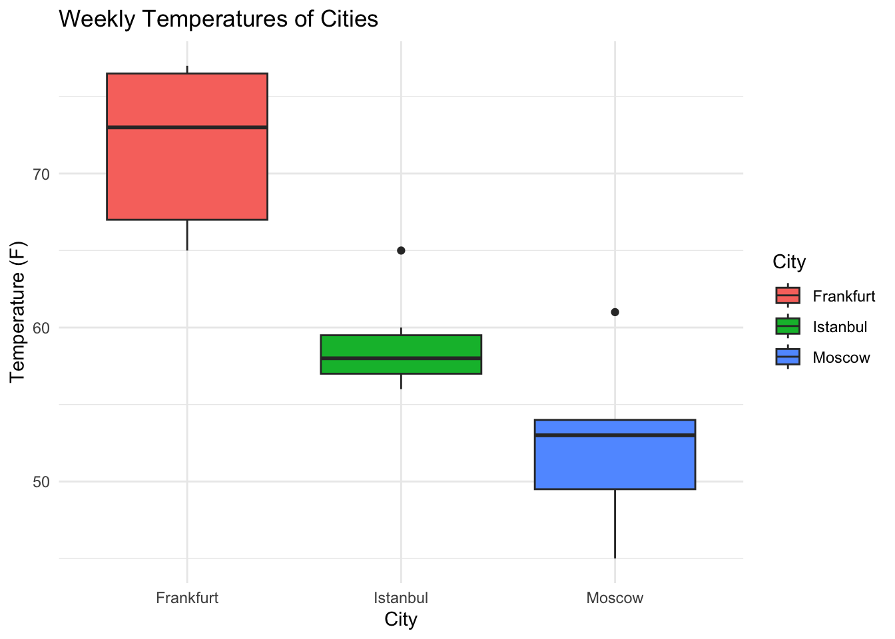

test_variable <- 2 + 6
test_variable[1] 8Welcome to your first off platform project using RStudio! There are a few goals of this project. The first is to get practice using some of the basic R commands you have learned so far. However, the second goal is to get familiar using RStudio itself. Take this time to explore the software and get a sense of how it works.
To begin, try executing this chunk of R code by clicking the Run button within the chunk. You can also place your cursor inside the code block and press Cmd+Shift+Enter (Mac) or Ctrl+Shift+Enter (windows) to run a line of code.
test_variable <- 2 + 6
test_variable[1] 8When you save the notebook, an HTML file containing the code and output will be saved alongside it (click the Preview button or press Cmd+Shift+K to preview the HTML file).
The preview shows you a rendered HTML copy of the contents of the editor. Consequently, unlike Knit, Preview does not run any R code chunks. Instead, the output of the chunk when it was last run in the editor is displayed.
We suggest reading the instructions for this project in the preview window. By doing so, you’ll see the text properly rendered. For example this should be in bold in the preview window. Let’s move onto the project instructions!
You’re planning an upcoming vacation and want to use your programming experience in R to help. You should be familiar with vectors, matrices, loops, conditionals, and functions before starting this project.
Let’s first look at the weather. Choose a location that you want to visit and look up the temperature (in Fahrenheit) for the next seven days. Store those values in a vector named temps_f.
Note that in our solution code, we’ll be planning a vacation to Wellington, New Zealand. Feel free to choose whatever location you want!
# Create your variable here
temps_f <- c(65, 65, 69, 73, 77, 77, 76)Nice work! But what if you want to know the degrees in Celsius? Let’s write a function that transforms a temperature from Fahrenheit to Celsius. To convert a temperature from Fahrenheit to Celsius, subtract 32 from your temperature and then multiply that value by 5/9. Be careful to subtract before multiplying!
After writing your function, test it using a few values. For example, 32 degrees Fahrenheit should be 0 degrees Celsius. 0 degrees Fahrenheit should be -17.77 degrees Celsius.
# Write your function here
fahrenheit_to_celcius <- function(fahrenheit){
celcius <- (fahrenheit-32) * 5/9
return(celcius)
}
fahrenheit_to_celcius(32)[1] 0Apply this function to all values in your Fahrenheit vector. Store these Celsius temperatures in a vector named temps_c.
Make sure this worked by printing temps_c
# Apply your function to temps_f here
temps_c <- sapply(temps_f, fahrenheit_to_celcius)Let’s make sure that the weather is above a certain threshold for the majority of your trip. Write a function that uses loops and conditionals to count the number of days the weather is above 60 degrees Fahrenheit. If more than half the days are above that threshold, return TRUE, otherwise return FALSE.
Test that function by calling it on your list of Fahrenheit temperatures.
There are a couple of ways to do this! We created a new variable that counted the number of days where the temperature was over 60. We then checked if that count was more than half the total number of days.
# Write your function here
number_of_days <- 0
enjoyable_trip <- function(vectorName){
for(degree in vectorName){
if(degree > 60){
number_of_days <- number_of_days + 1
}
}
print(number_of_days)
if (number_of_days > 3){
print("You're lucky!")
} else {
print("You have very limited time to enjoy sunshine.")
}
}
enjoyable_trip(temps_f)[1] 7
[1] "You're lucky!"Hopefully you picked a location that has nice weather!
Let’s compare your first city to two others. Look up two new cities and find the temperature (in Fahrenheit) of those cities for the next seven days. Along with the first city you chose, create a List city temperature. Name each item in the list after its corresponding city.
Note that in our solution code, we looked up temperatures for Moscow and Cape Town
# Create your list here
comparison_cities = list(
Moscow = c(48, 45, 54, 53, 51, 54, 61),
Istanbul = c(65, 59, 57, 56, 58, 60, 57)
)Apply the is_nice_weather() function you wrote earlier to all items in this list. Note that you’ll have to use a different apply function to do this! Which cities would be nice to visit this time of year? You should get a TRUE or FALSE value for each city.
# Apply your function to your list
comparison_cities_trip <- lapply(comparison_cities, enjoyable_trip)[1] 1
[1] "You have very limited time to enjoy sunshine."
[1] 1
[1] "You have very limited time to enjoy sunshine."print(comparison_cities_trip)$Moscow
[1] "You have very limited time to enjoy sunshine."
$Istanbul
[1] "You have very limited time to enjoy sunshine."Nice work - you’re on your way to becoming a true R coder!
As you continue your coding journey, one of the most critical skills to develop is the ability to use the internet to solve problems on your own. Hopefully there is a Codecademy course to teach you everything you need to know, but inevitably, you will want to do something that isn’t covered in one of our lessons. In those moments, knowing what resources to turn to is an essential skill (Hint: Google is your friend!)
In that spirit, we’re now going to ask you to do something we haven’t taught you yet: create a box plot of these three cities’ temperatures. If you get stuck, we luckily have a Codecademy course about this. But for now, try doing some research on your own — create a visualization of the weekly temperatures of your three different cities.
Here’s a hint to get you started: we recommend using ggplot2. Look up how to install this library in RStudio. You’ll also need to transform the data into a Data Frame.
library(ggplot2)# Create your boxplot visualization.
city_data <- data.frame(
City = rep(c("Frankfurt", "Moscow", "Istanbul"), each = 7),
Temperature = c(temps_f, comparison_cities$Moscow, comparison_cities$Istanbul)
)
ggplot(city_data, aes(x = City, y = Temperature, fill = City)) + geom_boxplot() + labs(
title = "Weekly Temperatures of Cities",
x = "City",
y = "Temperature (F)"
) +
theme_minimal()
Great work — you’re now writing R code on your own computer! This is a huge step in your journey of becoming an R programmer. Use the code block below to continue to explore what RStudio can do! We suggest looking at the libraries available to you in the Packages tab. Some of them are very complicated, but you can get a sense of the type of projects you can create in R!